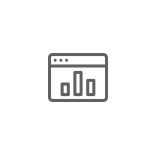
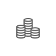

오픈플랫폼 소개
자본시장 공동 핀테크 오픈플랫폼
자본시장 공동 핀테크 오픈플랫폼(오픈플랫폼)은 금융회사, 유관기관, 핀테크 기업 및 기타 기업의 데이터와 서비스를 API로 게시하고, 상호 융합을 통해 경제적인 방식으로 혁신적 비즈니스를 만들 수 있는 기술기반입니다.
오픈플랫폼은 다수의 참여자 간 상호 교류를 위해 상호 양방향 서비스를 지향합니다.
API서비스의 공급자로서, 또한 API 서비스의 사용자로서 자유롭게 오픈플랫폼에 참여하여 새로운 금융서비스를 창출할 수
있는 기회를 경험하시기 바랍니다.

플랫폼 특징
-
Open API

JSON
- 플랫폼 참여 플레이어 간의 효율적 연결을 위한 연동 방식 및 데이터의 표준을 수립하여 구축
- 연동방식: 웹/모바일 업계 표준인 OpenAPI
- 데이터 표현방식은 JSON(JavaScript Object Notation)
-

- 금융회사와 핀테크 스타트업이 자발적 참여를 통해 데이터와 서비스를 표준화함
- 핀테크 실무협의체' 중심으로 데이터, 서비스 개방 범위 및 표준화
- 가상계좌관리, 인증, 핀테크기업과 금융회사간 서비스 연계 처리를 플랫폼이 제공
-
DATA

- 금융권 공통 플랫폼 위에 표준화된 데이터 서비스를 공유하고 개방
- 탐색 및 구축비용의 최소화와 네트워크 효과 극대화 지향
- 핀테크기업에 한정하지 않고, 자본시장 성장에 기여 가능한 모든 파트너의 참여 가능
자본시장 공동 핀테크 오픈플랫폼 확장 RoadMap
오픈플랫폼은 각 단계별 성장 로드맵에 맞추어 필요한 데이터와 서비스를 제공할 예정입니다.
1세대 금융 데이터 통합 조회 서비스 기반 구축
-

은행권계좌
통합서비스 -

금투권계좌
통합서비스 -

여신권카드
통합서비스 -

보험권계약
통합서비스 -

부동산정보
서비스 -

개인연금
정보서비스
2세대 조회 서비스를 기반으로 하는 부가 서비스
-

금융뉴스
제공서비스 -

개인금융정보
통합조회 서비스 -

초보적 투자
자문서비스 -

투자자산
추천서비스 -

투자도구
제공서비스 -

온라인펀드
비교서비스 -

분석정보
제공서비스
3세대 금융회사와 핀테크 기업 간 융합 One-Stop 서비스
-

개인종합자산
관리서비스 -
독립 투자자문업자
솔루션 -

로보 어드
바이저 서비스 -

온라인펀드
비교판매 서비스 -

온라인펀드
추천판매 서비스 -

Retail 알고리즘
트레이딩 서비스
또한 오픈플랫폼은 온라인자산관리, 투자자문서비스 등의 자산관리의 핵심 분야를 지원하는 자본시장 인프라로써의 역할을 수행 할 수 있도록 성장시켜 나갈 예정입니다.